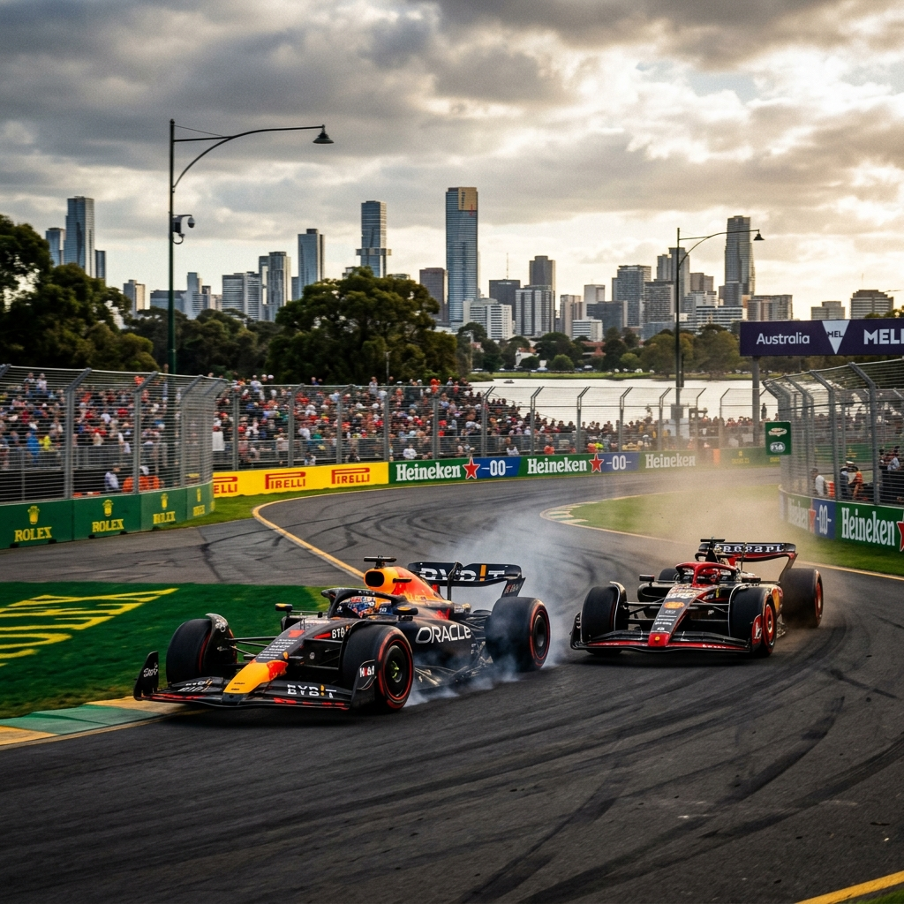

2026 Formula 1 Sezonuna Hoşgeldiniz!
Yeni kurallar, yeni araçlar ve heyecan verici sezonun başlangıcı Avustralya Grand Prix'sinde yaşanıyor. Favori takımını desteklemek için resmi ürünleri hemen keşfet!

Yeni kurallar, yeni araçlar ve heyecan verici sezonun başlangıcı Avustralya Grand Prix'sinde yaşanıyor. Favori takımını desteklemek için resmi ürünleri hemen keşfet!